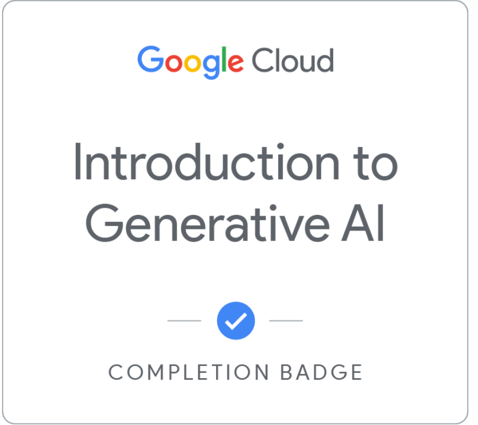
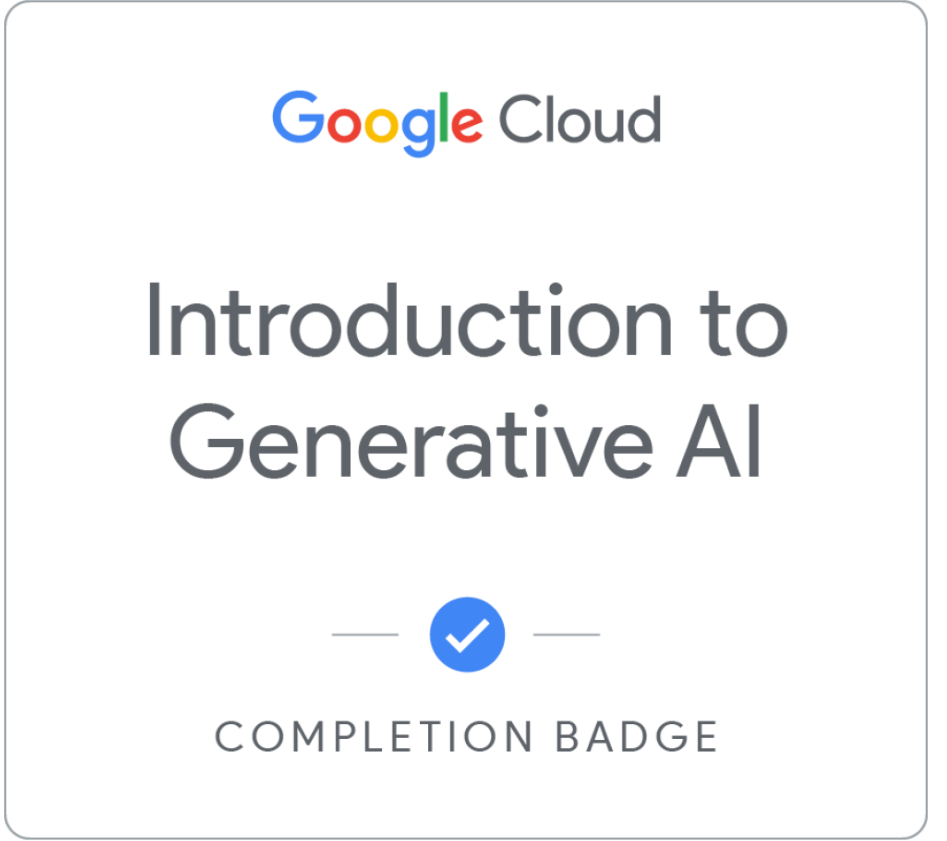
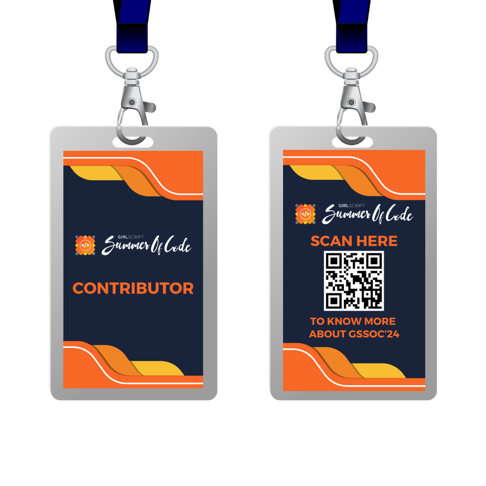
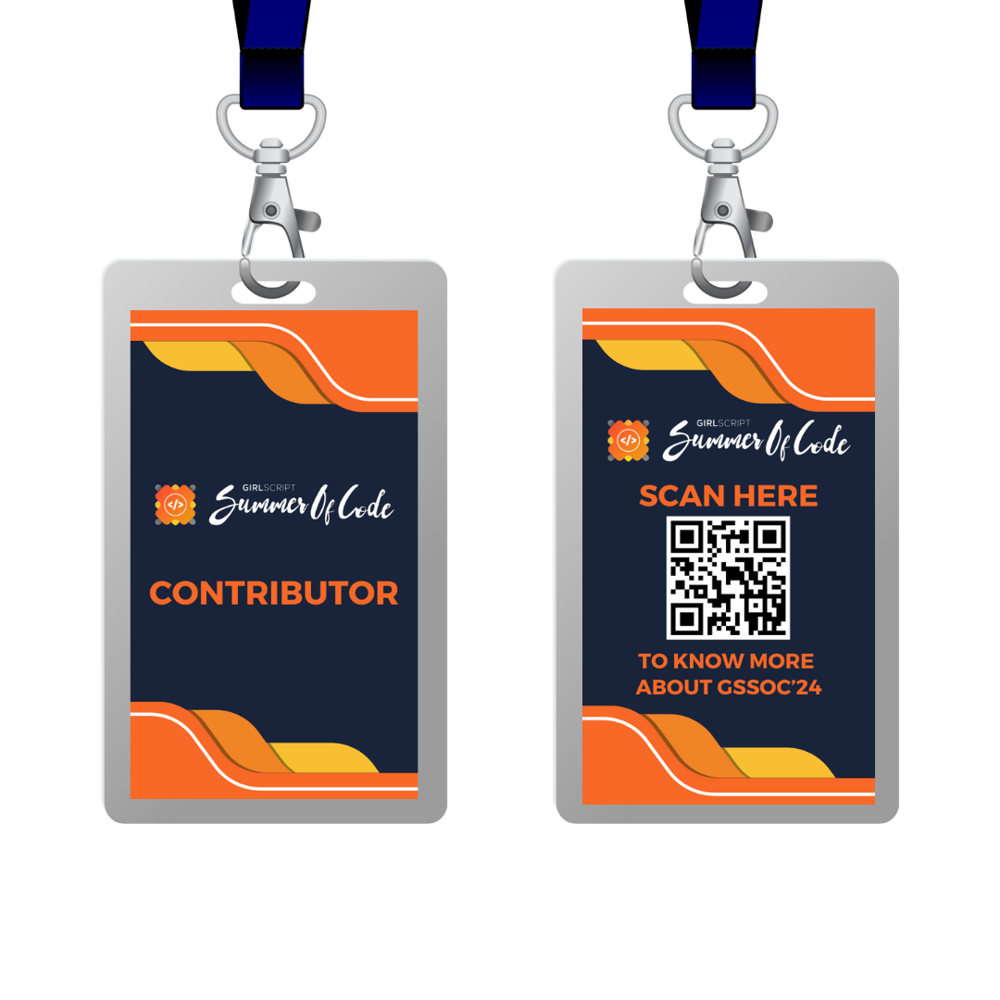
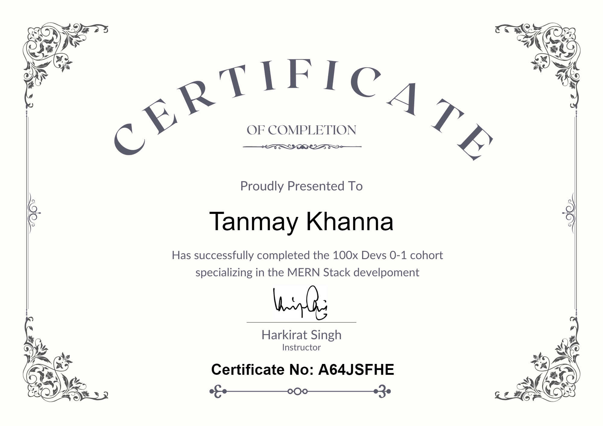
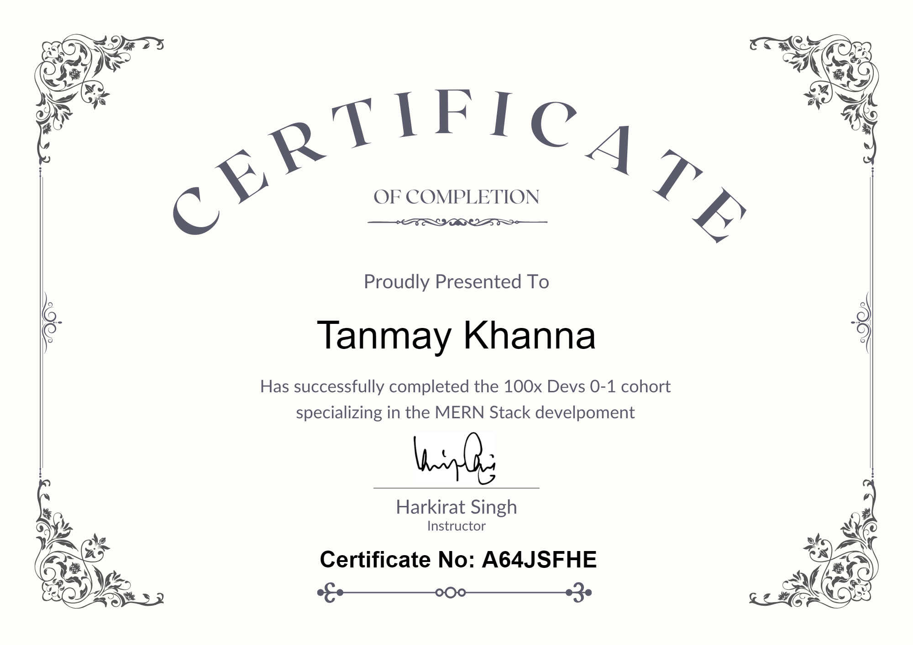
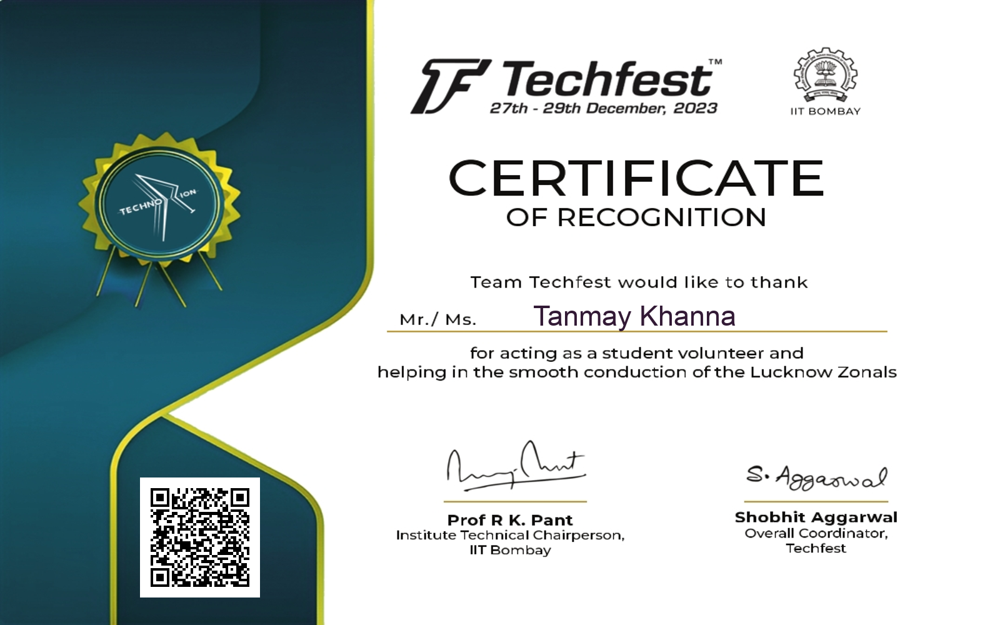
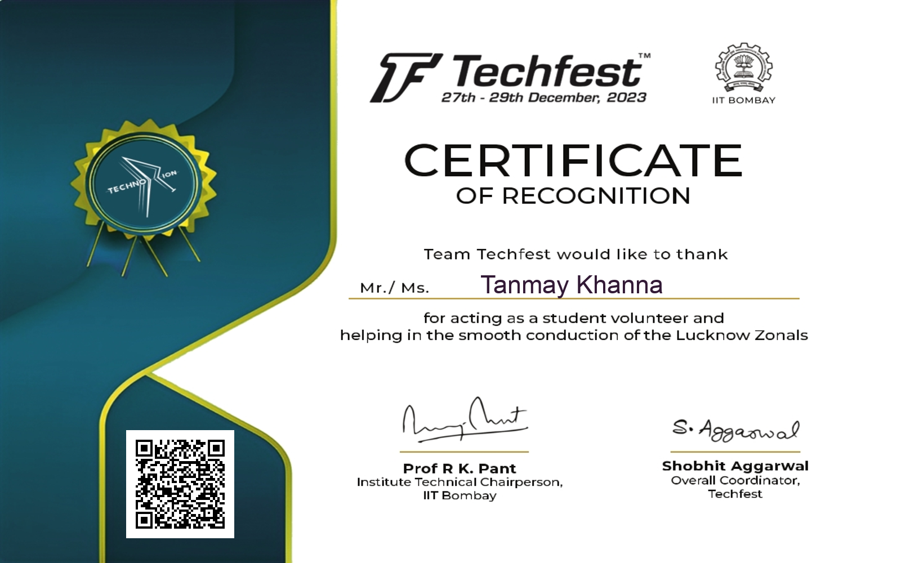

Hello everyone, my name is Tanmay Khanna. I am a student of Shri Ramswaroop Memorial University(SRMU), Lucknow. The course I pursue is Btech CSE with specialization in Cloud Computing and Artificial Intelligence. I am a passionate computer science student with experience in MERN stack, DevOps and Cloud Computing displayed through my projects and certifications. I actively participate in Hackathons/competitions and contribute to Open-source projects and to sharpen my existing skills.
Projects
A DevOps Project
Containerized a simple express application using Docker, ensuring seamless packaging and portability. Configured the container to include all the necessary dependencies and pushed the container to Docker Hub to make it accessible for deployment across different environments.
Orchestrated the deployment of application within a Kubernetes cluster. Set up the necessary resources and configurations using Kubernetes-manifests. Performed automatic GitOps deployment and canary release using ArgoCD and Argo Rollouts.
Hosted the codebase on GitHub, documenting all the procedure in README.md file.
A Chat Application
UI built using React.js ⚛️ and Recoil as state management library.
Used Express.js for backend requests and API routes and Socket.io for establishing Real-Time Bidirectional Communication through web-sockets.
Used MongoDB for database to store the messages and render them to the next user.
Can seamlessly transfer text messages and files like pdf,images, videos, etc. across the two contacts.


 

 

 


 
